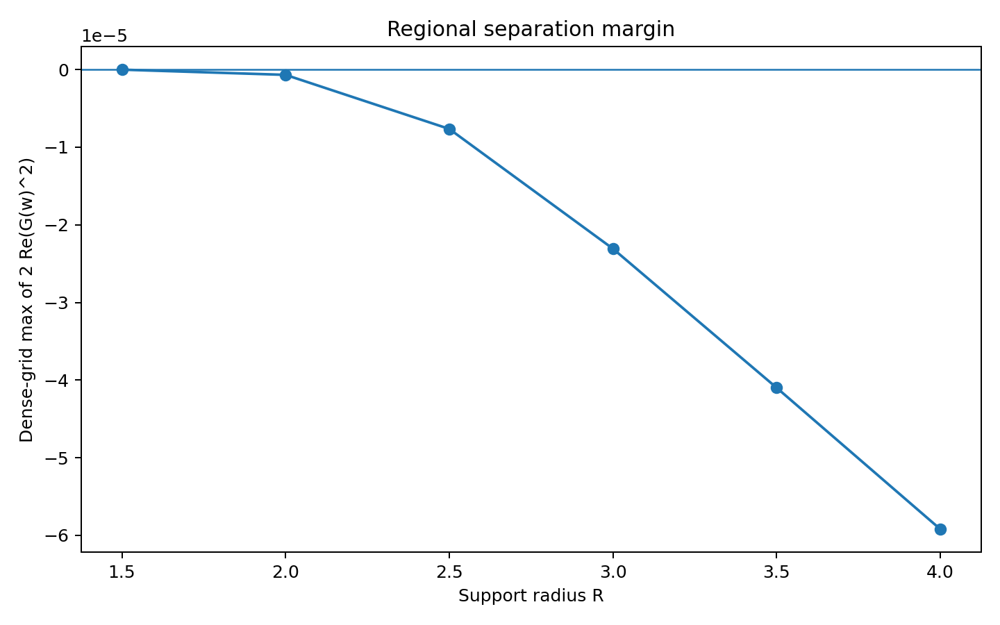

工程紀錄
v0.1
2026-07-24
INTERSECTION_FOUND_ON_GRID
分離—正性交集求解器
Separation–Positivity Intersection Solver v0.1 — 在同一組實係數向量上,同時檢驗偏軸區塊負方向與算術二次型正性,六個支撐半徑 R 皆找到有限網格交集。
RH_CLAIM = False
— 包內
intersection_scan.csv 逐列自報 intersection_found_on_grid=True,原樣照登。有限網格交集不是連續矩形證書,浮點正性不是區間 PSD 證書,這包不證明也不反駁黎曼猜想。
連接 · Connections
本包自己的技術說明開頭就寫明它接的是哪兩個包,原樣照引。
「前兩個工程包分別找到:1. 在偏軸矩形上形成負軌道區塊的係數;2. 在另一套基底與約束下數值上保持正的算術矩陣。但兩者尚未證明使用同一個係數向量。本包首次將兩者統一。」— 摘自本包技術說明 §1。
前置包一、二的檔案跟 AI 自主軌道側支原型區裡的兩個包位元組完全相同,為維持兩軌道「資料不合併」,檔案只留在 AI 自主軌道那邊,這裡連過去看。對應理論指向 Paley–Wiener 區域相位塑形引理——本包是那條引理第一次的數值落地嘗試。
技術說明
載入中…
結果數據
載入中…
圖表 · Figures
包內 outputs/ 的三張圖,原樣照登,無後製。



檔案 · Files
原始數據(selected_region_block.csv、selected_psi.csv 等大型 CSV)跟編譯快取沒有逐一列出,都在完整 zip 裡。
載入中…
sha256 6ff96e0da85651dce1f9edb71e116f7290d123cf64e13a5c4a9aaba72e0987b7